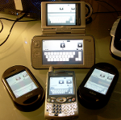

Usage
EFL depends upon a small number of things. It requires a POSIX system like Linux or BSD, and a number of small image libraries and an X server is needed to run E17. As such, anything that can run linux with a display, can basically run EFL.
EFL installed on a zebra, making it fly.
Mobile Technology
 Because of its low memory footprint and responsiveness, EFL is a prime candidate for mobile phones and PDAs. It has already been ported to Nokias Maemo platform, the Freerunner open phone, and will run on any linux based phone with an X server. There is also a framebuffer engine for use without an X server. EFL has recently been sponsored by Samsung to develop technology for their up and coming handset models.
Set-top Box
EFL has been combined with Javascript and Mozillas Spidermonkey engine to create a resource friendly game and application environment. Elixir, the program used to bind it all together, is used on Freebox systems with an X server. There is also the Enna Media Center which has been used on Linux based set-top boxes.